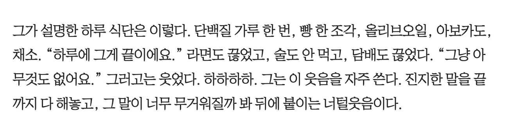

영포티 이준혁 식단
댓글
비하할떄 쓰는 영포티가 아니라 원래 영포티 뜻에 부합하는 사람이긴 함
원래 뜻은 이준혁같은 남자한테 쓰는 좋은 뜻이었음ㅋㅋㅋㅋ
아닐걸 원래모든 포티가아니라
지 주제모르고 어린줄알고 나대는애들만 딱집어서 영포티라쓴거아닌가
원래는 40대지만 젊게 사는 사람들이라는 마케팅용으로 영포티 쓰던거였음
지금은 달라졌지만
ㄴㄴ 원래는 좋은 의미로 시작함
젊은 감각을 가진 40대라는 뭐 그런 마케팅용어로 시작했는데 나중에는 나이값 못하고 애들 입는 옷을 따라 입는 40대 이런 느낌으로 변질됨
원래 젊게 사는 감각좋은 40대를 말하는 단어로
만들어 진거 맞음
근데 주제도 모르고 나대면서
자기가 여전히 먹히는줄 아는 40대
대머리 틀냄새 나는 아재들 때문에
지가 아직 어린줄 아는 착각심한 아재들
비꼴려고 변질된 단어임
진심 저게 가능할까.....
활동 때만 저렇게 한다고 해도 몇주에서 몇달은 저렇게 할 거 같은데;;;
못먹고살아야 늦게 늙는건가.........
그냥 현대음식이 과영영이라 그럼 비타민? 철분? 이런거 다 알약으로 때워지는 시점이닌깐
거기다 연예인처럼 피부미용받으면 일반인도 가능함 월 몇십나갈 뿐이지
피부미용 연예인은 몇백씩 쓰는거야
소식이 장수의 비법이라자너
닭가슴살도 아니고 프로틴에다 저 식단이면 한끼 먹는 것도 존나 좆같겠는데 저걸 어떻게 매일 먹지
우리도 저런얼굴이면 그렇게할거야..반드시..
식욕이 없는건가 신기하네 ㄷㄷ
나 왜 공혁준이라보고 들어왓지?

늙으면 진짜 저렇게 먹으면서 운동하고 관리 해야해
예전에 비가 아침에 일어나서 아몬드 10알 삶은 계란 2개 점심에 자유식 ... 저녁은 안먹고 간식 조금 이게 ...진짜더라 ㅜㅜ
진짜 ... 적게 먹는데도 살이 찌더라 운동하는것도 체중 유지를 위해서이지 빼는거로는 운동량 자체가 부족한지 몰라도 하달에 250 전후 많을때는 300정도 뛰는데도 살이 안빠지더라 뱃살이 없어지지도 않아
여기에 웨이트나 수영 하고 싶은데 정말 시간이 없다
연예인이라 우리랑 시간개념이 달라, 일반인이 저 루틴 따라하며 일하다가 빈혈와서 쓰러져 땅에 코박으면 병원비가 더 나온다 더 못생겨지고
300뛴다는게 뭐임? 칼로리 소모를 그정도 한다는거?
한달에 운동 250-300 킬로미터 뛴다고
칼로리 소모는 모르겠고
아 한달
그러면 하루에 매일 10km 언저리 뛴다는건데
살이 안빠진다고?
이미 몸이 유산소 강도에 적응을 해버렸나보네
차라리 유산소할 시간에 웨이트하고 식단 점검 해봐
아니면 너무 시간 쪼개서 운동해서 몸이 스트레스 상태일수 있음
숙면이 제일 중요함
적응된다고 칼로리 소모가 그렇게 덜어질수 있음? 본인이 인식못하는 뭔가가 있을듯 음료수를 많이 마신다거나
뭐라더라 뉴욕 사무직 칼로리 소모와 아마존 원주민 칼로리 소모가 생각보다 크게 차이 안났다는 연구결과 봤던 거 같은데
그러게 먹으면 칼로리 2천도 안될텐데 살이 쪘다고?
난 저렇게 먹으면 아사할듯..
칼로리 맞춰서 깨끗하게 먹으면 됨 개붕이들이 좋아하는 트레쉬들은 갖다 버리고
저렇게 먹고 살라믄 밥 생각도 안나게 다른 거에 몰두해야겠는데
다들 저런 삶을 살면 우리 영세한 베라, 파바, 던킨, 버거킹, 피자스쿨
농가는 다죽어요!!!!
600~700 정도 나올거같은데 말이되나
저렇게먹으면 근육도 같이빠지는데 아이돌 다이어트식단수준이다
연예인들은 관리를 꾸준히 하다보니 30대 이후부터는 일반인들이랑 존나 압도적으로 차이남.
50대 넘어서면 일반인들 성인병 하나 둘 달고 체력 떨어지는데 관리한 연예인들은 외모도 그렇고 체력도 좋다보니 활발하게 활동하고.
당장 일반인도 술담배, 배달 먹는 사람 vs 술담배 안하고 운동한 사람 차이 존나 나는데
관리 끝판왕인 연예인들은 ㄷㄷ
그냥 표준식단을 지키지 저건 너무 빈약한듯
존나 잘생겼다
기초대사량이 있는데 저 칼로리로 생활이 되나? 아예 뼈밖이 없는애들이면 몰라도
왜 난 맛있을거같지
평소에 디지게 먹고 감량할때 저렇게 먹는듯
먹는 거 엄청 좋아하는 사람임
술 취하면 라면 7봉지 끓여먹고
피자도 최대 5판씩 먹음
와 생각보다 더 대단한 사람이었네..
영양학적으로 보면 저렇게 먹는게 완벽한 식단임???
한두달이면몰도 계속 저렇게 버틸수가없을걸
이준혁도 영포티라고 불리는 구나